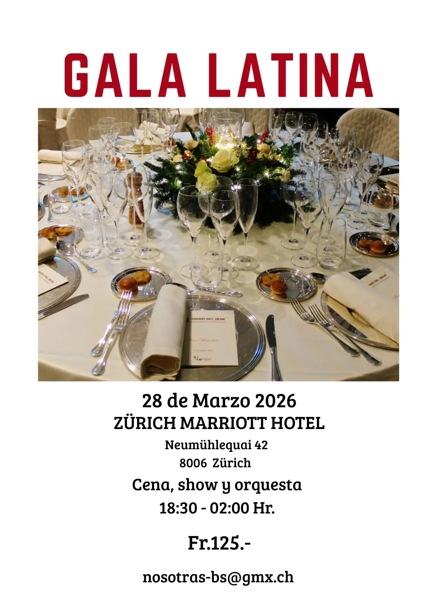

Español
Español
 Deutsch
Deutsch
Veranstaltungen
VI Latino Festival für Tanz und Gesang
12.09.2026
Das Latinoamerikanische Festival für Gesang und Tanz fördert und verbreitet weiterhin den kulturellen Reichtum Lateinamerikas durch Musik und Tanz.
In dieser Ausgabe laden uns Künstlerinnen und Künstler aus Argentinien, Bolivien, Kolumbien, Ecuador, Mexiko und Peru dazu ein, ihre Traditionen und künstlerischen Ausdrucksformen kennenzulernen. Freuen Sie sich auf einen Abend voller Farben, Talent und Lebensfreude. Den Abschluss bildet ein grosses Latino-Fest, bei dem wir gemeinsam unsere kulturelle Vielfalt feiern.

Flyer des Latino Festival für Tanz und Gesang 2026
Gala Latina 2026
28.03.2026
Der „Nosotras Verein“ und das Frauenausschuss in Zürich laden Sie zu einem unvergesslichen Abend ein. Abendessen, Show und Orchester. Sichern Sie sich jetzt Ihr Ticket!
Tickets erhältlich bei:
LA GUADALUPANA
Feldeggstrasse 53, 8008 ZürichANDINA
Spalenring 150, 4055 BaselWeitere Informationen:
nosotras-bs@gmx.ch
078 317 36 88

Flyer Gala Latina – 2026
Gala Latina 2025
Willkommen zur II Gala Latina! Unsere Initiative wurde am 25. März 1995 mit der Vision, das interkulturelle Zusammenleben in der Schweizer Gesellschaft zu fördern, ins Leben gerufen. "Nosotras", als gemeinnützige Organisation für Personen aus Lateinamerika im Raum Basel, hat sich von Anfang an mit Engagement dafür eingesetzt, Menschen, die hierherkommen, direkt zu unterstützen. Eine aktive Teilnahme in einer Gesellschaft ist wichtig, und deshalb wollen wir Menschen aus anderen Ländern willkommen heissen und in ihrem Integrationsprozess unterstützen. Das Erlernen der Sprache ist grundlegend für weitere Schritte in die neue Umgebung.
Die Herausforderungen für Neuzugezogene sind beträchtlich.: Sie müssen sich einer neuen Lebensweise und Kultur stellen, die Normen und Begriffe und vor allem ihre Rechte und Verpflichtungen im Land kennenlernen. Sie werden in jeder Hinsicht Herausforderungen bewältigen, die aussergewöhnliche Anstrengungen sowohl für ihre persönliche Entwicklung als auch für ihre soziale Verbindung benötigen. Wir sind überzeugt, dass sie auf diesem Weg begleitet werden müssen, denn diese Personen sind die Eltern derjenigen, welche die Zukunft dieser Gesellschaft gestalten.
Wir danken allen freiwilligen HelferInnen, die „Nosotras" drei Jahrzehnte lang unterstützt haben. Ein besonderer Dank gilt euch, dass ihr heute mit uns feiert. Lasst uns auf das Erreichte und auf die Zukunft anstossen! Salud!

Flyer Gala Latina – 2025
Gala Latina 2023
Unser Verein entschied, eine besondere Veranstaltung zu organisieren, um die aktive Teilnahme von Migranten in der Schweizer Gesellschaft zu fördern. Außerdem soll das Projekt das Bewusstsein für die Herausforderungen von Migranten stärken. Die Anforderungen sind hoch, die Verantwortung groß – dies erfordert psychische, physische und mentale Anstrengung.
Bei dieser „Gala Latina“ ehren wir Menschen aus Lateinamerika, die seit 20 oder 50 Jahren in dieser Region der Schweiz leben. Wir verleihen schriftliche Anerkennungen für ihre wertvollen persönlichen und beruflichen Beiträge in dieser Gesellschaft.
Frauen nominiert für die schriftliche Anerkennung aufgrund ihrer wertvollen Beiträge in dieser Schweizer Gesellschaft:
Brasilien
- Arlete Kaufmann (BS)
Kolumbien
- Nelly Stark-Corredor (BL)
- Martha García (BS)
Mexiko
- Elvira Amstutz-Tarello (BL)
Peru
- Doris Nonnato (BL)

Flyer Gala Latina – 25. März 2023
IV Latino Festival für Tanz und Gesang
März 2010


I Latino Festival für Tanz und Gesang
Das Latino Festival für Tanz und Gesang wurde ins Leben gerufen, um die Ausdrucksformen der verschiedenen Länder Lateinamerikas zu verbreiten und zu fördern.
2005 fand das erste Festival anlässlich des 10-jährigen Bestehens von NOSOTRAS statt. Seitdem wird diese interessante Tradition fortgeführt.
Bei jeder Aufführung entführen uns die eingeladenen Künstler gedanklich in die verschiedenen Länder Lateinamerikas.